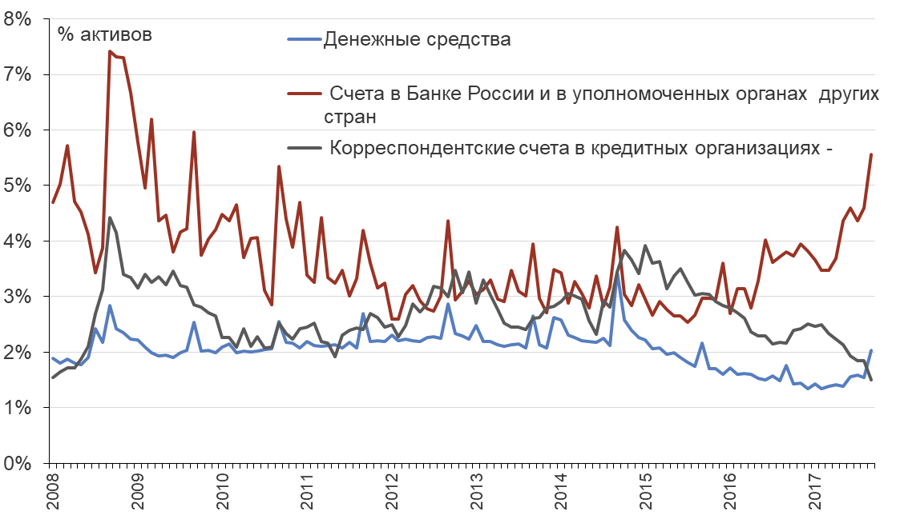
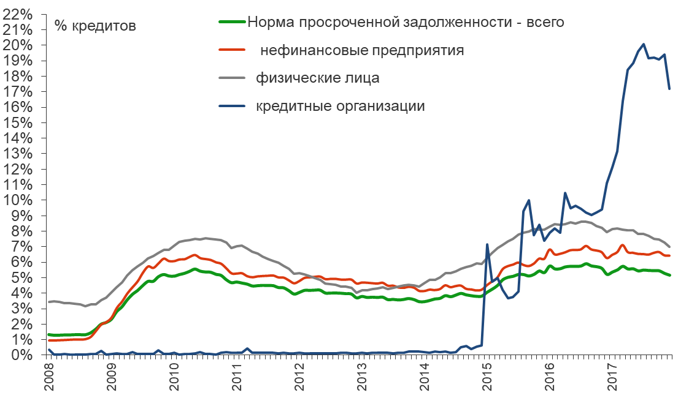

- Понять суть банковского бизнеса
- Понять, каким образом банки привлекают финансирование и как его используют
- Изучить особенности обязательств банков и принципы управления активами
- Изучить источники рисков, с которыми сталкиваются банки
- Понять особенности банковской системы РФ
2016-02-21
Цели лекции
Финансовое посредничество
- Финансовые институты выступают посредниками между сберегающими и кредитующимися агентами, поэтому их активами и обязательствами являются различные финансовые инструменты
- Финансовые институты объединяют фонды множества людей и фирм с тем, чтобы обеспечить их более эффективное использование
- Уровень финансового развития и уровень экономического развития связаны между собой – нет развитых экономик с неразвитым финансовым сектором.
Банки
Банки занимают особую роль в финансовой системе по следующим причинам:
- Банки обеспечивают большую часть внешнего финансирования компаний, особенности, в развивающихся экономиках.
- Банки, в отличие от других финансовых учреждений, имеют отличительный источник финансирования – депозиты (depository institution). Обычно депозиты – до определенной суммы - страхуются государством.
- Банковский бизнес – одним из наиболее регулируемых видов финансовой деятельности. Почему?
Экономические функции финансовых учреждений (банков)
- Объединение ресурсов множества мелких сберегающих агентов
- обеспечение расчетных и платежных функций
- Обеспечение возможностей для диверсификации риска
- Сбор и обрабатка информации таким образом, которые снижают информационные издержки
Активы и пассивы "типичного" банка
- Обязательства банка – источники средств, активы банка – вложения средств
- Активы = Обязательства + Капитал. Капитал банка представляет собой стоимость для его акционеров.
- Банки получают и предоставляют средства на платной основе (процентная ставка).
- Прибыль банка образуется за счет разница между процентной ставкой по привлеченным ресурсам и вложенным - net interest margin (NIM).
- Активы и пассивы банков имеют разную "длину". То есть банки предоставляют ресурсы "в среднем" на более длинный срок, чем привлекают ресурсы.
Активы банков
- Денежные средства
- Счета в Банке России и корсчета в других банках
- Кредиты корпоративному сектору – на текущие нужды (к примеру, пополнение оборотного капитала) и инвестиционные цели (к примеру, строительство завода)
- Кредиты населению – потребительские или ипотечные
- Кредиты другим финансовым учреждениям
- Вложения в долговые бумаги (облигации)
- Вложения в долевые бумаги (акции)
Активы банковской системы России
в трлн рублей

Активы банков – денежные средства
Ликвидные активы банков можно разделить на следующие группы:
- Касса
- Резервы (фактически – средства в центральном банке)
- Средства в расчетах
- Корсчета – средства, которые банки держат в других банках
Ликвидные активы российской банковской системы

Активы банков – кредиты
- Кредиты нефинансовому сектору – обычно залоговые
- Кредиты физическим лицам - залоговые (ипотека) и беззалоговые (потребительские кредиты)
- Межбанковские кредиты
- Прочие кредиты, включая репо
Банки могут специализироваться по основным типам кредитов (универсальные, розничные, ипотечные и прочие). Просроченная задолженность – не погашенная в срок задолженность по основному долгу и/или плановым процентам.
Кредиты российской банковской системы по типам

Доля просроченной задолженности (NPL) по типам кредитов

Пассивы банков
- Депозиты нефинансовых компаний
- Депозиты населения
- Депозиты других финансовых учреждений (межбанковский рынок кредитования)
- Выпущенные облигации
- Векселя
- Резервые на возможные потери
- Капитал банка
Основные источники фондирования банковской системы России

"Валютизация" депозитов
Доля депозитов в иностранной валюте по типу

Процентные ставки банков и оценка чистой процентной маржи (NIM)

Капитал банка
- Капитал банка = Активы банка - Обязательства банка
- Капитал банка - это средста акционеров, вложенные в банка, и одновременно "подушка безопасности" против снижения стоимости активов, которая может привести к неплатежеспособности банка (обязательства > активы).
- Банки обязаны выполнять требования по достаточности капитала (норматив Н1). Минимальное значение с 1 января 2016 года – 8% (ранее 10%)
- Определяется как отношение как активов, взвешенных по уровню риска (risk weighted assets – RWA) к капиталу
Норматив Н1.0 для топ-10 российских банков
по состоянию на 01.02.2016

Резервы на возможные потери по ссудам (РВПС)
- Важная часть капитала – резервы на возможные потери по ссудам
- РВПС начисляются для того, чтобы покрыть потенциальные убытки от невозврата кредита и дефолта – связь с просроченной задолженностью!
- Формирование резервов позволяет обеспечивать более стабильные условия деятельности и избегать сильных колебаний величины прибыли
- Банк классифицирует ссуды и относит их в ту или иную категорию качества, исходя из оценки риска.
Ставка риска по категории качества кредита
Определяется по Положению Банка России №254-П
| Категория качества | Наименование | Размер расчетного резерва в процентах от суммы основного долга по ссуде |
|---|---|---|
| I категория качества (высшая) | Стандартные | 0% |
| II категория качества | Нестандартные | от 1% до 20% |
| III категория качества | Сомнительные | от 21% до 50% |
| IV категория качества | Проблемные | от 51% до 100% |
| V категория качества (низшая) | Безнадежные | 100% |
Базовая деятельность банка
- Трансформация активов
- Управление обязательствами
- Maturity transformation – банки всегда занимают "коротко"" и кредитуют "длинно".
Общие принципы управления банком
- Управление ликвидностью
- Управление активами
- Управление размером капитала и его достаточностью
Рентабельнасть активов и капитала банка
\[ ROA = \frac{прибыль}{активы} \]
\[ ROE = \frac{прибыль}{капитал} \]
\[ Leverage = \frac{активы}{капитал} \]
\[ ROE = ROA * Leverage \]
Из последнего уравнения следует, что при фиксированной доходности активов (ROA) прибыль для акционеров максимальна при минимальном размере капитала!
Риски банков
- Риск ликвидности - риск того, что клиенты потребуют немедленно вернуть им наличные средства
- Кредитный риск - риск того, что клиенты не вернут выданные кредиты.
- Процентный риск - риск того, что изменение процентных ставок окажет большее влияние на стоимость активов, чем на стоимость обязательств
- Валютный риск - риск того, что изменение стоимости валюты окажет большее влияние на стоимость активов, чем на стоимость обязательств.
Торговый риск - риск того, что трейдеры банка, осуществляя операции на рынках ценных бумаг, понесут убытки. - Прочие риски
Управление риском ликвидности
- риски на стороне обязательств - риск внезапного возврата депозитов
- риск на стороне активов -
Инструменты управления риском ликвидности:
- приведение в соответствие временной структуры активов и обязательств
- формирование избыточных резервов
- обеспечение доступа к инструментам рефинансовирования центрального банка
Управление кредитным риском
Проблема ассиметрии информации - потенциальные заемщики знают о своем финансовом положении больше, чем банк. Наиболее рискованные заемщики имеют наибольшие стимулы обратиться в банк за кредитом.
Инструменты управления кредитным риском:
- Диверсификация кредитного портфеля по заемщикам, отраслям и проч.
- Анализ и оценка финансового положения заемщиков (скрининг)
- Мониторинг деятельности заемщиков (к примеру, обязательство по переводу всех расчетов в основной кредитующий банк)
- Специализация банка
- Залоги
- Ковенанты
Управление процентным риском
- Процентные ставки в экономике меняются со временем
- Стоимость различных активов и различных обязательств может по разному меняться при изменении процентных ставок, некоторые могут не меняться.
- Если банк имеет больше обязательств, "чувствительных" к изменению ставки, повышение ставок уменьшит прибыль банка, снижение ставок - увеличит.
- Стратегия управления процентным риском зависит от понимания и прогноза по процентным ставкам.
Инструменты управления процентным риском:
- модификация баланса с тем, чтобы снизить разницу между средней дюрацией активов и обязательств
- производные финансовые инструменты по ставкам
Риски банков и необходимость регулирования
Банковская деятельность - один из наиболее регулируемых видов деятельности из-за различных рисков и значимости финансовой системы для экономики в целом. Ассиметрия информация (стороны обладают разным количеством информации) усиливает проблемы отрицательного отбора и moral hazard.
Формы регулирования банковской деятельности:
- необходимость выполнения нормативов (наиболее важный - норматив достаточности капитала). Невыполнение нормативов является причиной для отзыва лицензии, то есть фактического закрытия банка.
- Государственная система страхования вкладов
- Защита прав потребителей - требования о раскрытии информации об условиях (к примеру, эффективной процентной ставки по кредиту)
Плюсы и минусы избыточного регулирования
Аргумент Коуза:
| Плюсы | Минусы |
|---|---|
| Стабильность системы | Издержки для банков |
| Издержки мониторинга | Снижение эффективности |
"Набег на банки""
- Набег на банки - класссический пример о необходимости регулирования и наличия центрального банка.
- Избежание набегов на банки - одна из причин создания центральных банков для выполнения ими функции "кредитора последней инстанции"
- Набеги на банки происходят до сих пор!
- Пример со Сбербанком в декабре 2014 года (массовая смс-рассылка клиентам банка о финансовых проблемах)
Банковская система России - основные особенности
- Доминирование нескольких крупных государственных банков – фактически сегментация банковского сектора на отдельные группы
- Опора на депозиты в структуре банковского фондирования, низкая доля иных источников финансирования
- Значительная доля операций в иностранной валюте как в активной, так и в пассивной части баланса – валютные риски
- Стратегия Банка России на сокращение количества банков и повышение их устойчивости
Задания и вопросы - 1
- Банки имеют высокую долю ликвидных активов на балансе – по сравнению с другими бизнеса. Как вы думаете почему?
- Почему может изменяться доля ликвидных активов?
- Какие инструменты управления пассивами может использовать банк, столкнувшийся с неожиданным оттоком депозитов. Почему банки предпочитают управлять пассивами, а не активами в этом случае?
- Банки А и Б имеют активы на 10 млрд рублей. Доходность активов одинаковая в обоих банков. Банк А имеет обязательства в 8 млрд рублей, банк Б – на 9 млрд рублей. Акционером какого банка вы предпочли бы быть? Почему?